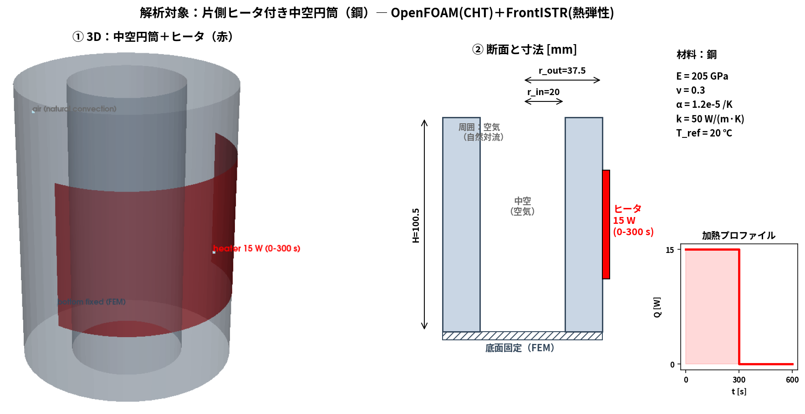
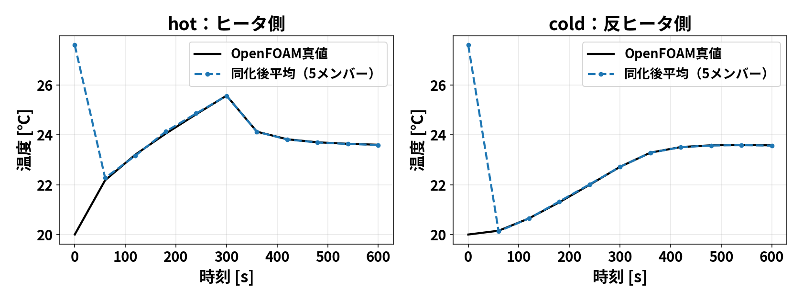
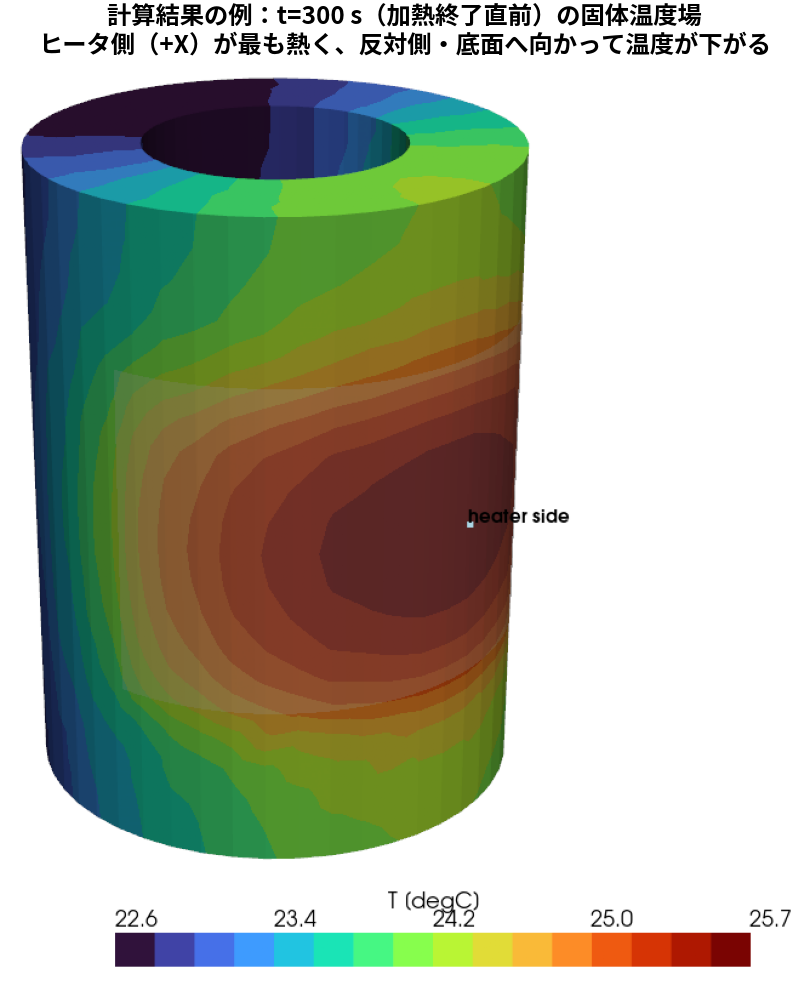
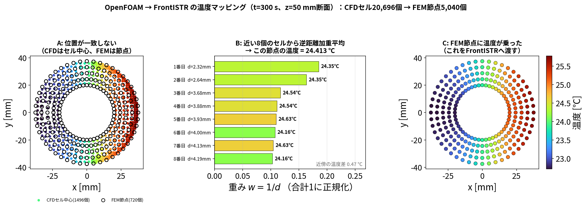
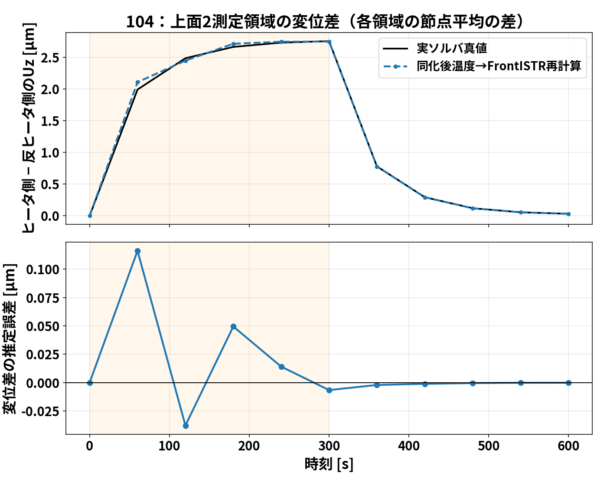
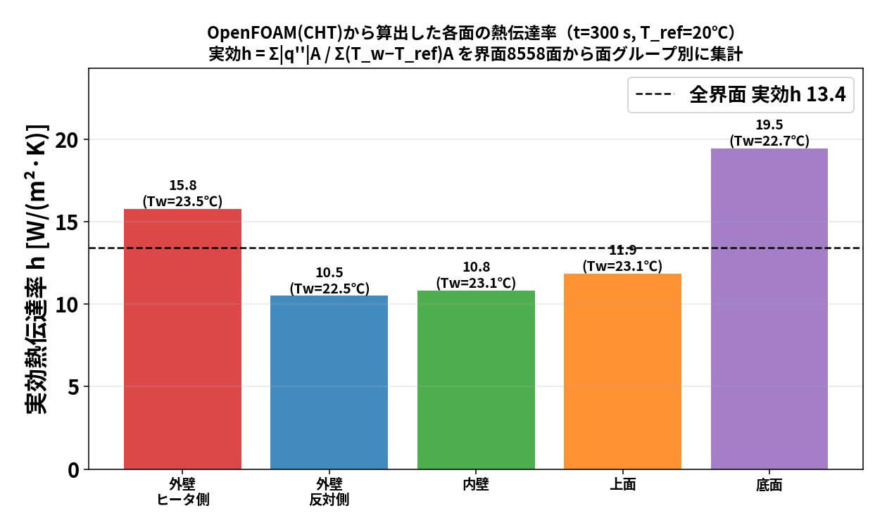
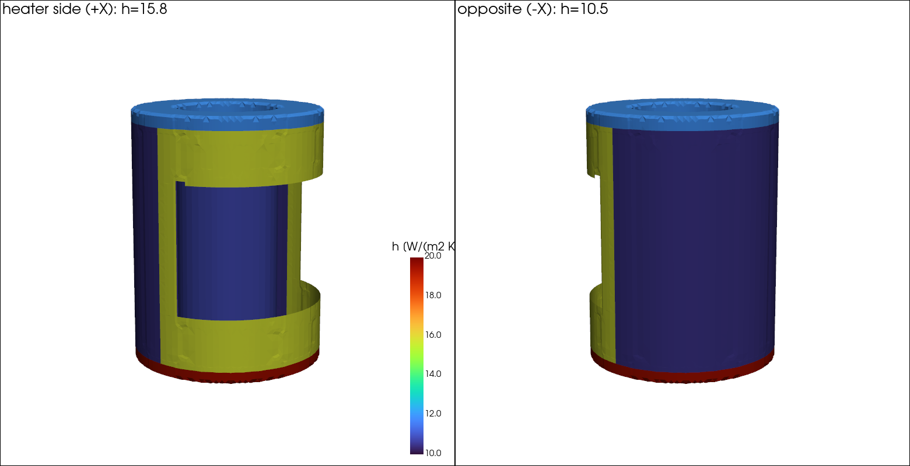

このブログシリーズは、106 でやった一連の研究（熱流体固体連成・データ同化・ROM）を、 手を動かしながら少しずつ理解していくためのものです。第1回は土台となる
の3本立てです。数式は最小限にして、まず「何をしているか」の絵をつかむことを優先します。
この記事の範囲：本記事は OpenFOAM（CHT）と FrontISTR の”計算そのもの” の話です。 データ同化（OI・EnKF）の中身は扱いません（それぞれ blog_002・blog_003 で別途）。
ここで実行しているのは EnKF そのものではありません。OpenFOAM の CHT と FrontISTR の熱弾性解析を一度きちんと計算し、温度・変位・熱伝達率の時刻歴を得ます。 この結果を「真値」とみなして観測値を人工的に作ると、後続の双子実験で EnKF がどれだけ 温度場や未知量を復元できるかを、誤差の正解が分かる状態で検証できます。
flowchart LR
A[OpenFOAM CHT\n流体＋固体の温度場] --> B[温度をFEM節点へ写像]
B --> C[FrontISTR\n熱弾性・変位]
A --> D[壁面熱流束と壁面温度\nから h を診断]
C --> E[真値データ\n温度・変位・反り]
D --> E
E --> F[人工観測を作る\n双子実験]
F --> G[次回以降：OI／EnKFで同化]図の左から右が計算の順序です。このページの計算結果が、次回以降で EnKF を詳しく 説明するための正解値（synthetic truth）になります。 EnKF の予報・観測摂動・共分散・ カルマンゲイン・更新式は、blog_002（OI）および EnKF 解説記事で独立に導出します。
技術の話に入る前に、この研究が何の役に立つのかを文献で押さえておきます。 主張には無料で読める出典を付けます（有料しか根拠が無いものは、そう明記します）。
Li, Z., Vogl, G. W., Kinzel, E. C., Santa, B., Landers, R. G. (2024) “Machine Tool Thermal Error Measurement and Prediction via Wireless Microscope”, Manufacturing Letters 41, 1440–1451（オープンアクセス） 📄 全文無料: https://tsapps.nist.gov/publication/get_pdf.cfm?pub_id=957076
“Thermal errors can contribute up to 75 percent of the overall machining errors of a machined part.”
同じ数字は Bünger, A. et al. (2023) arXiv:2306.12736（📄 https://arxiv.org/abs/2306.12736）でも 「Mayr et al., 2012 によれば熱誤差は最終製品の製造誤差の 75 % を占める」と引用されています。
同じく Li et al. (2024) より:
“In general, there are two methods for thermal error reduction: thermal error avoidance and thermal error compensation.”
“Thermal error avoidance is typically a more costly solution than thermal error compensation and is more sensitive to modeling errors and unknown disturbances.”
回避＝低膨張材料・潤滑や冷却の最適化で、機械を温度変化に鈍感にする。 補償＝温度から変形を予測し、その分だけ指令位置をずらす。 コスト面から補償が実務の主役、というのが文献の立場です。
補償が何をしているかも、同論文が明快に書いています:
“thermal error compensation is normally based on a predictive model established by the thermal error measurement of a machine tool.”
“employ a predictive error model, which are inverted to determine compensation amounts. Common thermal error models include least-square regression, finite element, neural network, gray system, etc.”
つまり「多点の温度と刃先変位を実測 → 関係をモデル化 → モデルを逆に使って補正量を出す」。
⚠️ 各社の公開情報（製品ページ）に基づく。数値は各社の公称値。
| オークマ | ヤマザキマザック | DMG MORI | 牧野フライス | |
|---|---|---|---|---|
| 技術名 | サーモフレンドリーコンセプト TAS-C / TAS-S |
AI Thermal Shield | Spindle Growth Sensor | （個別技術の集合） |
| 一言でいうと | 変形を予測しやすい形に設計してから推定 | 学習で補正を育てる | 変位を直接測って直す | そもそも熱を入れない |
| 特徴的な入力 | 送り軸の位置情報 | クーラントON/OFF・機械位置 | 主軸伸びの実測 | 熱伝導の時間遅れ |
| ハード側 | 熱変形の単純化構造 | 全軸ボールねじ軸冷却 | 冷却リニアガイド | 軸芯＋ジャケット冷却、断熱カバー |
| 公称性能 | 127機種中83機種・5万台超 | 室温8 ℃変化で6 µm維持 | 長期安定精度 | ミクロンオーダーの金型加工 |
TAS ＝ Thermo Active Stabilizer（読み：ティー・エー・エス）。 -C は Construction（環境熱変位制御）、-S は Spindle（主軸熱変位制御）。
オークマが他社と違う点は、熱を抑えるのではなく 「熱変形の単純化構造」で変形そのものを予測しやすい形に設計していること。 機械とCNC（OSP）を両方自社で作っているため、構造設計と補正を一体で最適化できます。 本研究の言葉でいえば、場の低次元性を設計変数にしていることになります。
補正のタイミング：事前に予測モデルを作り、運転中はCNCが温度を常時読んでオフセットを 更新し続ける（加工の合間に測るのではない）。FANUCも2022年に「AI熱変位補正」を発表し、 多点温度入力用のI/Oユニットを提供しています。
ここが本研究の動機です。Bünger et al. (2023)（📄 無料 https://arxiv.org/abs/2306.12736）:
“the accuracy of the TCP prediction depends highly on the accuracy of the model parameters, such as heat exchange parameters, and the initial temperature”
理由は3つあります。
効くのは温度そのものではなく勾配。柱の上下にわずかな温度差があるだけで曲げが生じ、 主軸先端ではてこで拡大される。「平均温度が合っている」ことは何の保証にもならない。
熱伝達率を直接測る計測器が存在しない。
標準試験は実運転を模擬していない。ISO 230-3:2020（📄 無料プレビューに Scope 全文: https://cdn.standards.iteh.ai/samples/73291/b10e76761d1945c6b7648d2fea86b6a8/ISO-230-3-2020.pdf） が規定するのは ETVE（環境温度変動）・主軸回転・直線軸・回転軸の4試験ですが、規格自身が:
“The test conditions described in this document are not intended to simulate the normal operating conditions… For example, use of coolants can significantly affect the actual thermal behaviour… these tests are considered only as the preliminary tests”
ゆえに：限られた実測から境界条件ごと補正し、熱変形そのものを推定する枠組みが要る。 それが本シリーズで作るものです。
| 間接法 | 直接法 | |
|---|---|---|
| 測るもの | 温度 | 刃先とワークの相対変位 |
| 道具 | 熱電対、測温抵抗体、サーマルカメラ | レーザ干渉計、静電容量センサ、タッチプローブ |
| 変位の求め方 | 温度→変形モデルで予測 | そのまま実測 |
| 短所 | モデルの精度に依存 | 多点測定に時間がかかる（加工を止める） |
タッチプローブとは、主軸に装着する接触式の測定器です。先端の球が対象に触れた瞬間に 信号を出すので、そのときの機械座標から位置が分かります。熱変位の測定では 基準球を定盤に固定しておき、一定時間ごとに測って見かけの位置の移動量を読みます。 機械に元から付いていることが多く追加投資が小さい一方、測るたびに加工を止める必要があります。
カメラでも測れます。Li et al. (2024)（上記、無料）は主軸にワイヤレス顕微鏡を付け、 テーブルに貼った基準マーク（フェムト秒レーザ加工、楕円格子350 µm間隔、 行・列の番号付き）を撮影して画像解析で3方向の変位を出しました。 精度は「機械の位置決め分解能の4倍以内、多くは2倍以内」と報告されています。
| 論文 | 内容 | 無料 |
|---|---|---|
| Teshima et al. (2024) CIRP JMST 55,
403–410 🔗 https://doi.org/10.1016/j.cirpj.2024.10.015 |
温度→TCP変位のROMを作り、回帰係数＝温度感度としてセンサ配置の指針を示す。「最適な点数と配置を決める方法が無かった」と問題提起 | ❌ |
| Ando et al. (ICTIMT2025) 🔗 https://doi.org/10.1007/978-3-032-01194-7_31 |
上の続報。伝達関数行列と温度感度分布で配置を決める | ❌ |
| Bünger et al. (2023) arXiv:2306.12736 📄 https://arxiv.org/abs/2306.12736 |
初期温度場をベイズ逆問題で推定し、事後分散を低ランク／テンソルトレイン近似で高速評価。「配置の評価は最適配置の前提」 | ✅ |
| Li et al. (2024) Manufacturing Letters
41 📄 https://tsapps.nist.gov/publication/get_pdf.cfm?pub_id=957076 |
ワイヤレス顕微鏡で熱変位を直接測る新手法 | ✅ |
| Coelho et al. (2025) arXiv:2510.03261 📄 https://arxiv.org/abs/2510.03261 |
誤差ではなく温度・熱流束の場そのものをNNで予測。6アーキテクチャをベンチマーク | ✅ |
| Peet (2019) Proc. SPIE 11158 🔗 https://doi.org/10.1117/12.2532755 |
赤外線シグネチャ監視のため、気象データのみを入力にFEM熱収支＋カルマンフィルタで表面温度分布を実時間推定 | ❌ |
読み取れる流れ：①誤差の直接予測から場の予測へ、②センサ配置が独立したテーマに、 ③測れない境界条件を推定する方向（CHTCのソフトセンサ等）、④測定の低コスト化。 Peet (2019) が示すように、熱の問題にデータ同化を持ち込む発想は分野の外では既に実用検討されています。
本シリーズの位置づけ：この3つの潮流（場の推定・配置設計・境界条件の推定）の交点にあり、 さらにOSSだけで一気通貫に実装して公開している点が特徴です。 先行研究との具体的な差分は blog_005 で扱います。
| 記号 | 意味 | 単位 |
|---|---|---|
| \(T(\boldsymbol x,t)\) | 位置 \(\boldsymbol x\) 、時刻 \(t\) の温度 | K（表示は℃） |
| \(T_w,T_\infty\) | 壁面温度、熱伝達率を定義する周囲基準温度 | K |
| \(T_{\rm ref}\) | 熱ひずみゼロの基準温度 | K |
| \(Q,q^{\prime\prime},A_i\) | 発熱量、面の熱流束、面 \(i\) の面積 | W、W/m²、m² |
| \(h\) | この回では表面熱伝達率 | W/(m² K) |
| \(\boldsymbol u,\varepsilon,\alpha\) | 変位、ひずみ、線膨張係数 | m、無次元、1/K |
本ケースでは周囲温度と熱ひずみ基準温度はともに293.15 Kですが、役割は別です。以下の熱伝達率の式の \(T_{\rm ref}\) は周囲基準温度 \(T_\infty\) を指します。温度差は1 K＝1 ℃であり、絶対温度は \(T[\mathrm K]=T[{}^\circ\mathrm C]+273.15\) で換算します。
手順は 熱の流れを解く → 温度差から熱ひずみを作る → 拘束下の変位を解く → 壁面熱流束からhを診断する です。最後のhの診断は、温度を計算した後の後処理です。

解析対象の全体像。左＝3D（赤い帯がヒータ：外周+X側、z=24.75〜75.75 mm）。 中＝断面と寸法。右＝材料と加熱プロファイル（0〜300 sだけ15 W）。
材料定数（鋼材）:
| 物性 | 値 |
|---|---|
| ヤング率 \(E\) | 205 GPa（ \(2.05\times10^{11}\) Pa） |
| ポアソン比 \(\nu\) | 0.3 |
| 密度 \(\rho\) | 7850 kg/m³ |
| 線膨張係数 \(\alpha\) | \(1.2\times10^{-5}\) /K |
| 基準温度 \(T_\mathrm{ref}\) | 293.15 K（20 ℃、ここで熱ひずみゼロ） |
熱の伝わり方は3つ（伝導・対流・輻射）ありますが、ここで効くのは 固体の中の伝導 と 固体まわりの空気の対流 です。ふつうの伝熱解析は「固体の表面に熱伝達率 \(h\) を与えて」空気を省略します。 でも \(h\) は本当は場所ごとに違い、事前には分かりません。
そこで 共役熱伝達（Conjugate Heat Transfer, CHT） では
固体と流体（空気）を”一体で”解く
ことをします。固体の中は熱伝導、空気の中は流れ＋伝導を解き、境界（固体表面）で温度と熱流束を連続に つなぐ。こうすると \(h\) を仮定しなくても、空気の対流が自動的に固体を冷やしてくれます。
OpenFOAM でこれを解くソルバが
chtMultiRegionFoam
です（multi-region＝複数領域を同時に解く）。
CHT では計算領域を2つに分けます。
constant/
├─ solid/ ← 円筒（鋼材）。熱伝導だけ
└─ fluid/ ← まわりの空気。流れ＋熱境界条件のキモは、固体と空気が接する面です。ここに
compressible::turbulentTemperatureCoupledBaffleMixed
のような “連成境界条件”
を置くと、両側の温度・熱流束を自動でつないでくれます。 （＝ここで \(h\)
を人間が与えない、というのがCHTの利点）
chtMultiRegionFoam
を回すと、各時刻ディレクトリ（60/, 120/,
…）に
solid/T：円筒の温度場（全セルの温度）fluid/T, fluid/U：空気の温度・流れが出ます。この solid/T（固体の温度場）が次の
STEP で主役になります。
片側加熱なので、ヒータ側（+X）が熱く、反対側（−X）がぬるい、という左右非対称の温度分布になります。

実ソルバ（chtMultiRegionFoam）で計算した温度の時間変化。0〜300秒の加熱でヒータ側（hot）がぐんぐん上がり、
反対側（cold）はゆるやかに上がる。300秒でヒータOFFにすると冷却へ。左右で温度が違うのがポイント。
温度「場」としても見ておきます（どこが熱いかが一目で分かります）:

OpenFOAM は流体・伝熱は得意ですが、構造（変形・応力）は解きません。 一方 FrontISTR はオープンソースの有限要素法（FEM）構造解析ソルバで、熱膨張が得意です。 そこで 「温度は OpenFOAM、変形は FrontISTR」 と役割分担します（弱連成＝一方向に温度を渡すだけ）。
OpenFOAM(CHT) ──温度場 T(x)──▶ FrontISTR(熱弾性) ──▶ 変位 u(x)金属は温めると伸びます。伸び具合は 線膨張係数 \(\alpha\) で決まり、温度が基準から \(\Delta T = T - T_\mathrm{ref}\) だけ上がると、各方向に
\[\varepsilon_\mathrm{thermal}=\alpha\,\Delta T\]
だけ伸びようとします（ \(\varepsilon\) はひずみ＝伸び率）。片側だけ熱いと、熱い側だけ伸びるので 円筒が反ります。FrontISTR は各要素のこの「伸びたい量」を集め、要素どうしがつながっている拘束の もとで、全体のつり合う変形（変位 \(u\) ）を線形弾性で解きます。
solid/T を最寄り節点へ内挿）＋材料定数（ \(E,\nu,\alpha\) ）＋基準温度 \(T_\mathrm{ref}\)
＋境界拘束（底面固定）。さらっと「内挿」と書きましたが、ここは連成で最初につまずく所なので図解します。
問題はこうです。OpenFOAMが温度を持っているのはセルの中心（有限体積法だから）。 いっぽうFrontISTRが温度を必要とするのは節点（有限要素法だから）。 同じ形状を解いていても、値が乗っている場所が違います。 しかもメッシュも別物で、本ケースでは CFDセル20,696個 に対して FEM節点5,040個です。

z=50 mm断面で見た様子（t=300 s）。A：色付きの点がCFDセル中心、黒丸がFEM節点。 重ねると互いにずれているのが分かる。B：1つの節点について、近い8個のセルを距離の近い順に並べ、 重み \(w=1/d\) で加重平均する様子。C：こうして全節点に温度が乗った状態。これをFrontISTRへ渡す。
Bの中身を数字で：この節点の近くには2.32〜4.19 mmの距離に8個のセルがあり、 温度は24.16〜24.63 ℃とばらついています。距離の逆数で重みを付けると 1番近いセルが0.186、8番目が0.102の重みになり、加重平均は 24.413 ℃。 これがこの節点の温度になります。式で書くと:
\[T_p=\frac{\sum_{c\in\mathcal N_k(p)}w_{pc}\,T_c}{\sum_{c\in\mathcal N_k(p)}w_{pc}}, \qquad w_{pc}=\frac{1}{\lVert x_p-x_c\rVert}\]
実装はここにあります： 102_1_frontistr_hollow_cylinder_thermal_expansion/python/openfoam_temperature.py
| 関数 | 役割 |
|---|---|
load_solid_cell_temperatures() |
OpenFOAMの <時刻>/solid/C（セル中心）と
<時刻>/solid/T（温度）を読む |
align_cell_centers_to_node_mesh() |
2つの点群のバウンディングボックス中心を合わせて平行移動（回転・拡大はしない） |
interpolate_to_nodes() |
各節点について最近傍 \(k=8\) 個から逆距離加重（上の式） |
核心部分は10行ほどです:
for idx in range(n_nodes):
d = np.linalg.norm(cell_centers - node_coords[idx], axis=1) # 全セルまでの距離
nearest = np.argsort(d)[:k] # 近い順にk個
dn = d[nearest]
if dn[0] < 1e-9: # 節点がセル中心と一致したら
result[idx] = cell_temperatures[nearest[0]] # その値をそのまま
continue
w = 1.0 / dn # 重み＝距離の逆数
result[idx] = np.sum(w * cell_temperatures[nearest]) / np.sum(w)事前に必要な操作：セル中心の座標ファイル
C はOpenFOAMが自動では書かないので、
先に出しておきます。
postProcess -func writeCellCentres -region solid -time 300注意点
C と T
は同じセル順で書かれるので素直にzipできますが、
並列計算のままだと順序が分割ごとになるため
reconstructPar が必要です。（POD復元した温度を同じ手順でFEMへ渡す話は blog_004 §7-1 にあります。）
底面を固定し上面を自由にしているので、上面がいちばん動きます。ヒータ側の上面（A）と 反対側の上面（O）で上向き変位 \(U_z\) を比べると、片側加熱の「反り」が数値で見えます。 この 2 点の差 \(U_z(\mathrm A)-U_z(\mathrm O)\) が、後のブログで「注目量（QoI）」として何度も出てきます。

FrontISTR で計算した熱変形。片側だけ熱いと上面がヒータ側へ「反り」、ヒータ側A と反対側O の 上向き変位 \(U_z\) に差が出る。温度が上がるほど反りが大きくなり、冷却で戻る。（変形は見やすさのため誇張表示）
[各時刻] OpenFOAM: solid/T を計算
│
├─ FEM節点温度へ内挿
▼
FrontISTR: 熱ひずみ ε=αΔT → つり合い → 変位 u
▼
上面A/Oの Uz、2点差 = 反りの大きさこれで 「温度→変形」の物理が一通りつながりました。
CHT の利点は「 \(h\) を仮定しない」ことでしたが、逆に結果から \(h\) を”逆算”して分布を見ることができます。 「どの面がどれだけ冷えているか」を1つの数字（ \(h\) ）で見える化するわけです。
ある壁面から空気へ逃げる熱流束（単位面積あたりの熱の流れ） \(q^{\prime\prime}\) [W/m²] は、 壁の温度 \(T_w\) と周囲（基準）温度 \(T_\mathrm{ref}\) の差に比例するとみなせて、その比例係数が熱伝達率 \(h\) です。
\[q^{\prime\prime}=h\,(T_w-T_\mathrm{ref})\quad\Longrightarrow\quad h=\frac{q^{\prime\prime}}{\,T_w-T_\mathrm{ref}\,}\ \ [\mathrm{W/(m^2\,K)}].\]
CHT を解いた後、chtMultiRegionFoam の結果に対して
wallHeatFlux
関数（functionObject）または後処理ユーティリティで、
固体表面の各面（face）ごとに出せる。solid/T の表面パッチ値（各面の温度）。これらは全部 面（face）ごとに配列で得られるので、面ごとに割り算すれば
\[h_i=\frac{q^{\prime\prime}_i}{\,T_{w,i}-T_\mathrm{ref}\,}\qquad(i=\text{each face})\]
で 「 \(h\) の面分布」 が作れます。ParaView で \(h\) をコンター表示すれば、 ヒータ側・反対側・上面・底面でどう \(h\) が違うかが色で見えます。
面集合を \(\mathcal G\) とし、 \(\Delta T_i=T_{w,i}-T_\infty\) と置きます。面積平均は
\[ \bar h_A=\frac{\sum_{i\in\mathcal G}h_iA_i}{\sum_{i\in\mathcal G}A_i}. \]
一方、「総放熱量を同じにする1個のh」を求めるなら、まず面ごとの熱流束を足します。
\[ \dot Q_{\mathcal G}=\sum_{i\in\mathcal G}q_i^{\prime\prime}A_i =\sum_{i\in\mathcal G}h_i\Delta T_i A_i =h_{\rm eff}\sum_{i\in\mathcal G}\Delta T_i A_i. \]
右端を \(h_{\rm eff}\) について解くと、
\[ h_{\rm eff}=\frac{\sum_iq_i^{\prime\prime}A_i}{\sum_i\Delta T_i A_i} =\frac{\sum_i h_i\Delta T_i A_i}{\sum_i\Delta T_i A_i}. \]
したがって 面積平均と実効値は一般には等しくありません。例えば同面積2面で \(h=(10,20)\) 、 \(\Delta T=(1,3)\) なら、面積平均15に対し実効値は \((10+60)/(1+3)=17.5\) W/(m² K)です。次節は後者を集計します。
熱流束の符号は「固体から空気へ」を正として揃えます。次節の絶対値による集計は熱流束の大きさを扱う方法で、入熱と放熱が混在する場合の正味熱量とは異なります。温度差がほぼ0の面では局所hの割り算は不安定になります。
方法だけでなく、本当に計算してみます。加熱終了の \(t=300\)
秒で、chtMultiRegionFoam の結果に
postProcess -region solid -func wallHeatFlux -time 300をかけ、界面（solid_to_fluid パッチ、8558
面）の各面で \(q^{\prime\prime}\) と
\(T_w\) を取り出し、 \(T_\mathrm{ref}=20\) ℃
として面グループごとに実効熱伝達率
\[h=\frac{\sum_i |q^{\prime\prime}_i|\,A_i}{\sum_i (T_{w,i}-T_\mathrm{ref})\,A_i}\]
を集計しました（結果を図と表に）。

どの面がどこかを3Dでも見てみます（界面を \(h\) で色分け）。ヒータ側(+X)と反対側(−X)から見た2枚です。

界面（solid_to_fluid
パッチ）を熱伝達率で色分け。左＝ヒータ側(+X)から、右＝反対側(−X)から。
ヒータ側の外壁（黄, 15.8）＞ 反対側（濃紺,
10.5）、底面の縁（赤, 19.5）がいちばん高い、
上面（水色, 11.9）、空洞の内壁（青,
10.8）。「どの面がどれだけ冷えているか」が形と一緒に見えます。
ParaView では solid_to_fluid
パッチだけを表示し、計算した面フィールド h を
面（face）単位の色として表示しています。したがって、図の色は円筒全体の平均ではなく、
「その場所の固体表面から空気へ熱が逃げる強さ」です。左図の +X
側外壁、右図の −X 側外壁、
円筒の内壁、上面、底面の縁を見比べると、同じ円筒でも場所によって値が変わることが分かります。
面名と位置の対応は、solid_to_fluid
が空気に接する全界面、outer/top/bottom が外側の
各面、inner
が中空部の内壁、という境界パッチ定義に基づきます。
| 面グループ | 平均壁温 \(T_w\) | 実効 \(h\) [W/(m²·K)] |
|---|---|---|
| 外壁・ヒータ側(+X) | 23.5 ℃ | 15.8 |
| 外壁・反対側(−X) | 22.5 ℃ | 10.5 |
| 内壁（空洞） | 23.1 ℃ | 10.8 |
| 上面 | 23.1 ℃ | 11.9 |
| 底面 | 22.7 ℃ | 19.5 |
| 全界面 | — | 13.4（OpenFOAM内蔵の
heatTransferCoeff(T) 場とも整合） |
読み取れること:
ポイント：CHT は \(h\) を 入力しない代わりに、結果から \(h\) を 面ごとに診断できる。 「どの面がどれだけ冷えているか」を1枚の図＋表で定量化できるのが強みです。 （値は界面全体の面積重みつき実効値。局所には温度差ゼロ付近で \(h\) が跳ねる面もあるため、 グループごとの実効値で見るのが安全です。）
chtMultiRegionFoam）
は固体＋空気を一体で解き、 \(h\)
を仮定せず温度場を出す。次回（blog_002）は、この「温度→変形」を土台に、少ないセンサから全体を推定するデータ同化（OI）へ進みます。 まず 熱感度解析で”どこを測ると効くか”を見抜き、感度の高い点で OI を回します。行列の計算は 節点数をうんと減らした具体例で、手で追えるようにやります。
../../102_1_frontistr_hollow_cylinder_thermal_expansion/docs/00_openfoam_frontistr_coupling_workflow.md00_data_assimilation_algorithm.md../../102_1_frontistr_hollow_cylinder_thermal_expansion/config/material_properties_steel.yaml